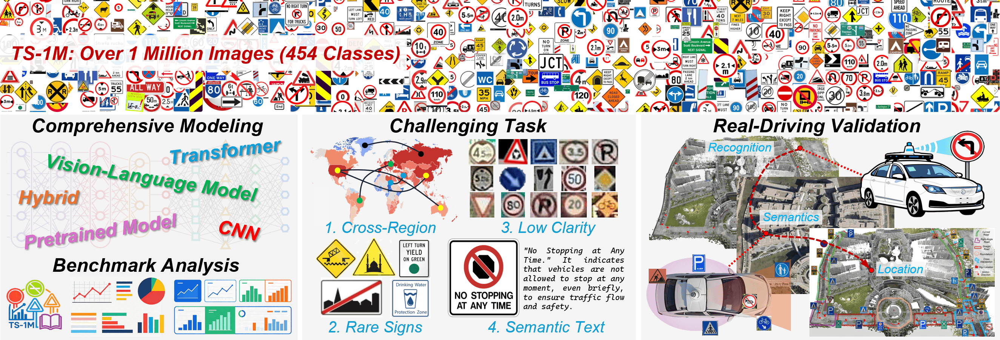
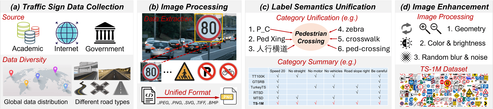
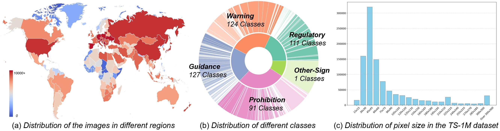
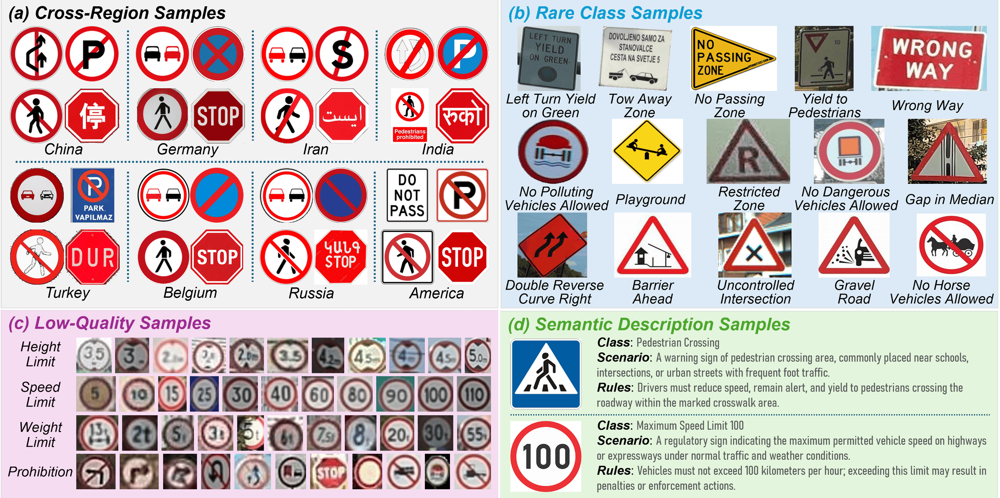
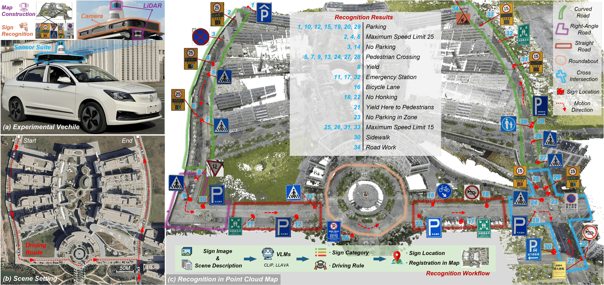

Traffic signs play a critical role in intelligent transportation systems and autonomous driving, providing essential cues for navigation, safety regulation, and environmental awareness. Although numerous recognition models have been proposed, existing benchmarks are typically limited in scale, geographic diversity, and category coverage, making it difficult to evaluate model robustness in real-world scenarios.
Current traffic sign datasets often suffer from regional bias, inconsistent labeling standards, and insufficient representation of rare or visually ambiguous signs. These limitations restrict the development and fair comparison of modern recognition models, especially for cross-region generalization and long-tail category understanding.

To address these challenges, we introduce TS-1M, a large-scale traffic sign dataset and benchmark designed for comprehensive evaluation of modern vision models. TS-1M contains over 1 million image samples across 454 categories, aggregated and standardized from diverse sources worldwide. Together with a unified evaluation benchmark spanning classical CNNs, self-supervised models, and vision-language models, TS-1M provides a diagnostic testbed for studying robustness, scalability, and generalization in traffic sign recognition.
Data Collection & Processing
TS-1M combines public traffic sign datasets and additional web-collected samples within a unified 454-category taxonomy. Traffic sign regions are cropped using available source annotations. Source categories are aligned by comparing sign graphics and traffic meanings; numerical, directional, vehicle-specific, and functional distinctions are retained. All 454 retained categories are manually reviewed.

Release & Statistics
TS-1M contains 1,267,558 image samples, including offline augmentation: 1,033,947 training samples and 233,611 test samples. Each original image and its augmented variants remain in the same partition. The inventory spans 454 categories and globally collected traffic signs with diverse designs, languages, and road environments.

Challenge-Oriented Evaluation Sets
The benchmark evaluates four challenges. Cross-region and cross-dataset transfer uses a separate training run for each target, excluding the target source and, for regional targets, its region across other sources. MTSD is held out as an entire global source dataset. Rare-Class uses categories with fewer than 40 or 50 test samples under a common per-category split ratio. Low-Clarity uses crops below 30 × 30 pixels before model-input resizing. Semantic descriptions support classification experiments using class names, scene context, and rule information.

Modeling
We benchmark 19 models in three groups: ten classical supervised models, five self-supervised pretrained models, and four vision-language models. SSL methods include MAE/SimMIM (masked image modeling), DINO (self-distillation), and SimCLR/MoCoV3 (contrastive learning). VLMs include CLIP, BLIP, BLIP-2, and LLaVA.
Supervised models
ImageNet-pretrained CNN, transformer, and hybrid classifiers adapted to the 454-category task.
Self-supervised models
Masked image modeling, self-distillation, and contrastive pretraining, followed by supervised classification fine-tuning.
Vision-language models
CLIP: image–text similarity. BLIP: ITC retrieval and ITM reranking. BLIP-2 and LLaVA: category-text generation.
Overall Benchmark on TS-1M
On the TS-1M test split, CLIP achieves 95.33% Top-1 accuracy and the highest macro-precision and macro-F1. ConvNeXt reaches 94.28% accuracy and a slightly higher macro-recall (0.9086 versus CLIP’s 0.9084). SimMIM achieves the highest accuracy among the evaluated SSL models (94.03%).
| Model | Params (M) ↓ | FLOPs (G) ↓ | Acc.@1 ↑ | Precision ↑ | Recall ↑ | F1 ↑ | Δ (pp) ↑ |
|---|---|---|---|---|---|---|---|
| ResNet50 | 25.6 | 4.09 | 0.9260 | 0.8724 | 0.8633 | 0.8570 | — |
| ResNet101 | 44.5 | 7.80 | 0.9315 | 0.8899 | 0.8979 | 0.8844 | +0.55 |
| ResNeXt50 | 25.0 | 4.23 | 0.9403 | 0.9005 | 0.9007 | 0.8920 | +1.43 |
| ShuffleNetV2 | 2.28 | 0.15 | 0.9234 | 0.8583 | 0.8811 | 0.8592 | -0.26 |
| MobileNetV3 | 2.54 | 0.06 | 0.9265 | 0.8876 | 0.8653 | 0.8628 | +0.05 |
| EfficientNetV2 | 21.46 | 9.72 | 0.9372 | 0.9135 | 0.8954 | 0.8977 | +1.12 |
| MobileViT | 5.58 | 2.03 | 0.9277 | 0.8855 | 0.8888 | 0.8786 | +0.17 |
| EdgeNeXt | 18.51 | 3.81 | 0.9369 | 0.9033 | 0.9021 | 0.8951 | +1.09 |
| Vision Transformer | 86.56 | 17.58 | 0.9244 | 0.9188 | 0.8478 | 0.8658 | -0.16 |
| ConvNeXt | 50.22 | 8.69 | 0.9428 | 0.9146 | 0.9086 | 0.9043 | +1.68 |
| MAE | 86.56 | 17.58 | 0.9160 | 0.8733 | 0.8700 | 0.8575 | -1.00 |
| SimMIM | 87.77 | 15.14 | 0.9403 | 0.9236 | 0.8935 | 0.8972 | +1.43 |
| DINO | 86.56 | 17.58 | 0.9190 | 0.8898 | 0.8516 | 0.8595 | -0.70 |
| MoCoV3 | 25.6 | 4.09 | 0.9385 | 0.9008 | 0.8935 | 0.8876 | +1.25 |
| SimCLR | 25.6 | 4.09 | 0.9364 | 0.8989 | 0.8929 | 0.8868 | +1.04 |
| CLIP | 149.6 | 39.7 | 0.9533 | 0.9310 | 0.9084 | 0.9113 | +2.73 |
| BLIP | 223.7 | 67.2 | 0.9448 | 0.8872 | 0.8949 | 0.8770 | +1.88 |
| BLIP-2 | 3756.2 | 611.8 | 0.9432 | 0.8828 | 0.8883 | 0.8776 | +1.72 |
| LLaVA | 7062.9 | 6216.7 | 0.9406 | 0.9136 | 0.8677 | 0.8776 | +1.46 |
Results of Challenge Task
Cross-Region and Cross-Dataset Transfer. All evaluated models achieve test-image-weighted average accuracies above 87%. CLIP leads on nine of the ten targets, reaching a weighted average accuracy of 93.51%; ConvNeXt reaches 91.42%. These results characterize generalization under the target-specific holdouts on the globally collected TS-1M data foundation.
| Model | TT100K | GTSRB | PTSD | TurkeyTS | PolishTS | BelgiumTS | RTSD | MTSD | DFG | ARTS | Avg. | Δ (pp) |
|---|---|---|---|---|---|---|---|---|---|---|---|---|
| ResNet50 | 0.9255 | 0.9488 | 0.9143 | 0.9020 | 0.8461 | 0.9507 | 0.9306 | 0.8503 | 0.8495 | 0.9072 | 0.8900 | — |
| ResNet101 | 0.9393 | 0.9492 | 0.9126 | 0.9050 | 0.8561 | 0.9502 | 0.9311 | 0.8497 | 0.8746 | 0.9325 | 0.8978 | +0.78 |
| ResNeXt50 | 0.9370 | 0.9447 | 0.9263 | 0.9340 | 0.8563 | 0.9551 | 0.9350 | 0.8636 | 0.9107 | 0.9508 | 0.9091 | +1.91 |
| ShuffleNetV2 | 0.9374 | 0.9474 | 0.9136 | 0.9118 | 0.8654 | 0.9454 | 0.9374 | 0.8272 | 0.8340 | 0.9263 | 0.8861 | -0.39 |
| MobileNetV3 | 0.9290 | 0.9448 | 0.9172 | 0.9141 | 0.8526 | 0.9400 | 0.9322 | 0.8470 | 0.8393 | 0.9148 | 0.8895 | -0.05 |
| EfficientNetV2 | 0.9409 | 0.9417 | 0.9122 | 0.9184 | 0.8592 | 0.9556 | 0.9414 | 0.8553 | 0.8949 | 0.9434 | 0.9036 | +1.35 |
| MobileViT | 0.9378 | 0.9455 | 0.9050 | 0.9134 | 0.8552 | 0.9417 | 0.9355 | 0.8412 | 0.8598 | 0.9316 | 0.8927 | +0.27 |
| EdgeNeXt | 0.9337 | 0.9417 | 0.9184 | 0.9176 | 0.8470 | 0.9493 | 0.9416 | 0.8610 | 0.8926 | 0.9374 | 0.9031 | +1.31 |
| Vision Transformer | 0.9163 | 0.9477 | 0.9151 | 0.9106 | 0.8551 | 0.9489 | 0.9326 | 0.8404 | 0.8855 | 0.8914 | 0.8860 | -0.40 |
| ConvNeXt | 0.9442 | 0.9441 | 0.9185 | 0.9301 | 0.8618 | 0.9530 | 0.9425 | 0.8707 | 0.9302 | 0.9521 | 0.9142 | +2.41 |
| MAE | 0.9323 | 0.9454 | 0.9212 | 0.8980 | 0.8517 | 0.9572 | 0.9371 | 0.8118 | 0.8822 | 0.8816 | 0.8760 | -1.40 |
| SimMIM | 0.9358 | 0.9426 | 0.9197 | 0.9114 | 0.8808 | 0.9503 | 0.9414 | 0.8626 | 0.9208 | 0.9414 | 0.9083 | +1.83 |
| DINO | 0.9270 | 0.9477 | 0.9261 | 0.9129 | 0.8645 | 0.9516 | 0.9385 | 0.8097 | 0.8948 | 0.9260 | 0.8843 | -0.58 |
| MoCoV3 | 0.9377 | 0.9413 | 0.9182 | 0.9326 | 0.8546 | 0.9488 | 0.9413 | 0.8661 | 0.8871 | 0.9397 | 0.9057 | +1.57 |
| SimCLR | 0.9390 | 0.9497 | 0.9197 | 0.9304 | 0.8700 | 0.9593 | 0.9333 | 0.8576 | 0.8838 | 0.9369 | 0.9037 | +1.37 |
| CLIP | 0.9496 | 0.9432 | 0.9448 | 0.9770 | 0.9719 | 0.9615 | 0.9447 | 0.9058 | 0.9444 | 0.9545 | 0.9351 | +4.51 |
| BLIP | 0.9296 | 0.9395 | 0.9119 | 0.9032 | 0.8618 | 0.9342 | 0.9298 | 0.8698 | 0.8801 | 0.9145 | 0.8997 | +0.97 |
| BLIP-2 | 0.9210 | 0.9101 | 0.9352 | 0.9460 | 0.8857 | 0.9563 | 0.9385 | 0.8622 | 0.9138 | 0.9184 | 0.8999 | +0.98 |
| LLaVA | 0.9071 | 0.9009 | 0.9411 | 0.9727 | 0.9572 | 0.9518 | 0.9182 | 0.8743 | 0.9187 | 0.9172 | 0.9041 | +1.40 |
Rare-Class Recognition. With the same per-category split ratio, low test frequencies identify categories with limited training representation. CLIP achieves 92.91% on Rare < 40 and 92.56% on Rare < 50. ConvNeXt reaches 87.84% and 88.29%; SimMIM is the strongest SSL model in both subsets.
| Model | Rare < 40: Acc. | Precision | Recall | F1 | Δ (pp) | Rare < 50: Acc. | Precision | Recall | F1 | Δ (pp) |
|---|---|---|---|---|---|---|---|---|---|---|
| ResNet50 | 0.8381 | 0.9460 | 0.8373 | 0.8636 | — | 0.8438 | 0.9469 | 0.8424 | 0.8683 | — |
| ResNet101 | 0.8610 | 0.9532 | 0.8597 | 0.8767 | +2.29 | 0.8639 | 0.9521 | 0.8625 | 0.8792 | +2.01 |
| ResNeXt50 | 0.8530 | 0.9518 | 0.8525 | 0.8745 | +1.49 | 0.8601 | 0.9519 | 0.8568 | 0.8794 | +1.63 |
| ShuffleNetV2 | 0.8334 | 0.9303 | 0.8307 | 0.8509 | -0.47 | 0.8395 | 0.9281 | 0.8363 | 0.8546 | -0.43 |
| MobileNetV3 | 0.8090 | 0.9326 | 0.8071 | 0.8306 | -2.91 | 0.8179 | 0.9314 | 0.8148 | 0.8366 | -2.59 |
| EfficientNetV2 | 0.8689 | 0.9602 | 0.8533 | 0.8826 | +3.08 | 0.8736 | 0.9606 | 0.8581 | 0.8867 | +2.98 |
| MobileViT | 0.8486 | 0.9462 | 0.8478 | 0.8709 | +1.05 | 0.8545 | 0.9453 | 0.8529 | 0.8748 | +1.07 |
| EdgeNeXt | 0.8642 | 0.9468 | 0.8632 | 0.8836 | +2.61 | 0.8694 | 0.9458 | 0.8677 | 0.8869 | +2.56 |
| Vision Transformer | 0.8314 | 0.9568 | 0.7891 | 0.8325 | -0.67 | 0.8407 | 0.9569 | 0.7985 | 0.8403 | -0.31 |
| ConvNeXt | 0.8784 | 0.9446 | 0.8705 | 0.8891 | +4.03 | 0.8829 | 0.9469 | 0.8746 | 0.8932 | +3.91 |
| MAE | 0.8134 | 0.9252 | 0.7681 | 0.8069 | -2.47 | 0.8235 | 0.9292 | 0.7786 | 0.8170 | -2.03 |
| SimMIM | 0.8706 | 0.9595 | 0.8553 | 0.8806 | +3.25 | 0.8730 | 0.9597 | 0.8567 | 0.8817 | +2.92 |
| DINO | 0.8169 | 0.9071 | 0.7816 | 0.8135 | -2.12 | 0.8258 | 0.9120 | 0.7902 | 0.8222 | -1.80 |
| MoCoV3 | 0.8460 | 0.9425 | 0.8447 | 0.8663 | +0.79 | 0.8539 | 0.9431 | 0.8515 | 0.8719 | +1.01 |
| SimCLR | 0.8469 | 0.9414 | 0.8456 | 0.8689 | +0.88 | 0.8520 | 0.9407 | 0.8501 | 0.8720 | +0.82 |
| CLIP | 0.9291 | 0.9453 | 0.9295 | 0.9218 | +9.10 | 0.9256 | 0.9448 | 0.9251 | 0.9183 | +8.18 |
| BLIP | 0.8821 | 0.8760 | 0.8778 | 0.8617 | +4.40 | 0.8827 | 0.8804 | 0.8777 | 0.8626 | +3.89 |
| BLIP-2 | 0.8715 | 0.9300 | 0.8678 | 0.8771 | +3.34 | 0.8772 | 0.9254 | 0.8700 | 0.8763 | +3.34 |
| LLaVA | 0.8655 | 0.9315 | 0.8600 | 0.8755 | +2.74 | 0.8690 | 0.9320 | 0.8640 | 0.8790 | +2.52 |
Robustness on Low-Clarity Signs. This evaluation measures recognition with limited spatial detail in small sign crops. CLIP achieves 93.13% Top-1 accuracy, followed by BLIP (91.75%) and ConvNeXt (90.88%). Among SSL models, MoCoV3 reaches 90.12%, SimMIM 90.00%, and SimCLR 89.59%.
| Model | Acc.@1 ↑ | Precision ↑ | Recall ↑ | F1 ↑ | Δ (pp) ↑ |
|---|---|---|---|---|---|
| ResNet50 | 0.8768 | 0.7707 | 0.7768 | 0.7553 | — |
| ResNet101 | 0.8876 | 0.7824 | 0.8414 | 0.7948 | +1.08 |
| ResNeXt50 | 0.9055 | 0.8005 | 0.8512 | 0.8123 | +2.87 |
| ShuffleNetV2 | 0.8691 | 0.7284 | 0.8082 | 0.7468 | -0.77 |
| MobileNetV3 | 0.8789 | 0.7882 | 0.7925 | 0.7729 | +0.21 |
| EfficientNetV2 | 0.9014 | 0.8284 | 0.8325 | 0.8164 | +2.46 |
| MobileViT | 0.8845 | 0.7624 | 0.8098 | 0.7656 | +0.77 |
| EdgeNeXt | 0.8937 | 0.8014 | 0.8518 | 0.8121 | +1.69 |
| Vision Transformer | 0.8622 | 0.8184 | 0.7655 | 0.7659 | -1.46 |
| ConvNeXt | 0.9088 | 0.8426 | 0.8725 | 0.8441 | +3.20 |
| MAE | 0.8332 | 0.7943 | 0.7585 | 0.7536 | -4.36 |
| SimMIM | 0.9000 | 0.8348 | 0.8502 | 0.8266 | +2.32 |
| DINO | 0.8394 | 0.8076 | 0.8047 | 0.7858 | -3.74 |
| MoCoV3 | 0.9012 | 0.7993 | 0.8336 | 0.7995 | +2.44 |
| SimCLR | 0.8959 | 0.7885 | 0.8293 | 0.7938 | +1.91 |
| CLIP | 0.9313 | 0.8861 | 0.8583 | 0.8583 | +5.45 |
| BLIP | 0.9175 | 0.8491 | 0.8835 | 0.8442 | +4.07 |
| BLIP-2 | 0.8931 | 0.7621 | 0.8214 | 0.7685 | +1.63 |
| LLaVA | 0.8926 | 0.7907 | 0.7531 | 0.7526 | +1.58 |
Effect of Semantic Enhancement. Scenario and Rules enter training prompts for description-based fine-tuning and inference prompts for zero-shot evaluation. The four text compositions specify the inference prompts for each setting; the predefined category vocabulary is unchanged. Test-image ground-truth labels are not model inputs and do not select descriptions. With Class + Scenario + Rules and description-based fine-tuning, CLIP, BLIP, and LLaVA reach 95.81%, 94.78%, and 96.98% accuracy, respectively. These are classification benefits, rather than direct evidence of traffic-rule understanding.
| Model | Text composition | Zero-shot: Acc. | Precision | Recall | F1 | FT w/o descriptions: Acc. | Precision | Recall | F1 | FT w/ descriptions: Acc. | Precision | Recall | F1 |
|---|---|---|---|---|---|---|---|---|---|---|---|---|---|
| CLIP | Class | 0.0664 | 0.1227 | 0.0918 | 0.0730 | 0.9554 | 0.9359 | 0.9040 | 0.9105 | 0.9426 | 0.9094 | 0.8895 | 0.8849 |
| CLIP | Class + Scenario | 0.0805 | 0.1067 | 0.1051 | 0.0782 | 0.8149 | 0.7621 | 0.8394 | 0.7436 | 0.9514 | 0.9043 | 0.9009 | 0.8928 |
| CLIP | Class + Rules | 0.0851 | 0.1103 | 0.1057 | 0.0794 | 0.7450 | 0.6827 | 0.8032 | 0.6695 | 0.9530 | 0.9179 | 0.9116 | 0.9014 |
| CLIP | Class + Scenario + Rules | 0.0971 | 0.1166 | 0.1068 | 0.0822 | 0.6739 | 0.6612 | 0.7753 | 0.6281 | 0.9581 | 0.9345 | 0.9161 | 0.9160 |
| BLIP | Class | 0.1432 | 0.2060 | 0.1969 | 0.1426 | 0.9448 | 0.8872 | 0.8949 | 0.8770 | 0.8958 | 0.8111 | 0.8574 | 0.8158 |
| BLIP | Class + Scenario | 0.1467 | 0.2228 | 0.2286 | 0.1652 | 0.7971 | 0.7817 | 0.8241 | 0.7396 | 0.9118 | 0.8580 | 0.8898 | 0.8261 |
| BLIP | Class + Rules | 0.1522 | 0.2194 | 0.2005 | 0.1517 | 0.7287 | 0.7020 | 0.7849 | 0.6723 | 0.9280 | 0.8721 | 0.8819 | 0.8507 |
| BLIP | Class + Scenario + Rules | 0.1754 | 0.2370 | 0.2453 | 0.1705 | 0.6642 | 0.7172 | 0.7579 | 0.6377 | 0.9478 | 0.8881 | 0.9098 | 0.8834 |
| LLaVA | Class | 0.1061 | 0.1094 | 0.0868 | 0.0866 | 0.9406 | 0.9136 | 0.8677 | 0.8776 | 0.9416 | 0.8895 | 0.8953 | 0.8746 |
| LLaVA | Class + Scenario | 0.1566 | 0.1523 | 0.1049 | 0.1194 | 0.8859 | 0.8607 | 0.8033 | 0.8104 | 0.9507 | 0.9189 | 0.8943 | 0.8971 |
| LLaVA | Class + Rules | 0.1460 | 0.1452 | 0.1176 | 0.1099 | 0.8685 | 0.8307 | 0.7743 | 0.7819 | 0.9452 | 0.9244 | 0.9106 | 0.9065 |
| LLaVA | Class + Scenario + Rules | 0.1716 | 0.1500 | 0.1263 | 0.1302 | 0.8373 | 0.8106 | 0.7293 | 0.7261 | 0.9698 | 0.9493 | 0.9270 | 0.9337 |
An on-road semantic-mapping case study uses a vehicle equipped with a 128-beam LiDAR and surround-view cameras along an approximately 1.4 km route. The route includes curves, intersections, roundabouts, and straight segments. The case study includes 34 registered traffic-sign instances.
CLIP fine-tuned on TS-1M predicts sign categories. LLaVA receives sign images and scene descriptions to generate rule text. Camera–LiDAR registration associates these outputs with estimated three-dimensional positions in a point cloud map. This case study illustrates the integration of sign recognition and semantic annotations into mapping.
